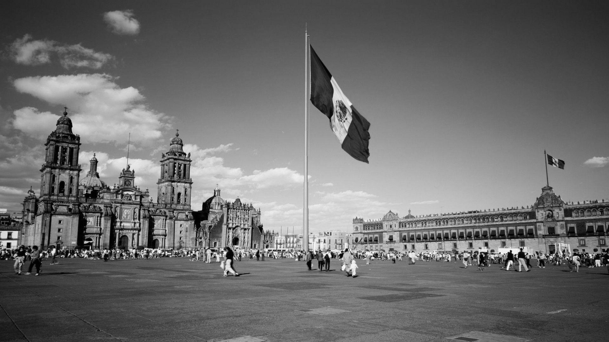
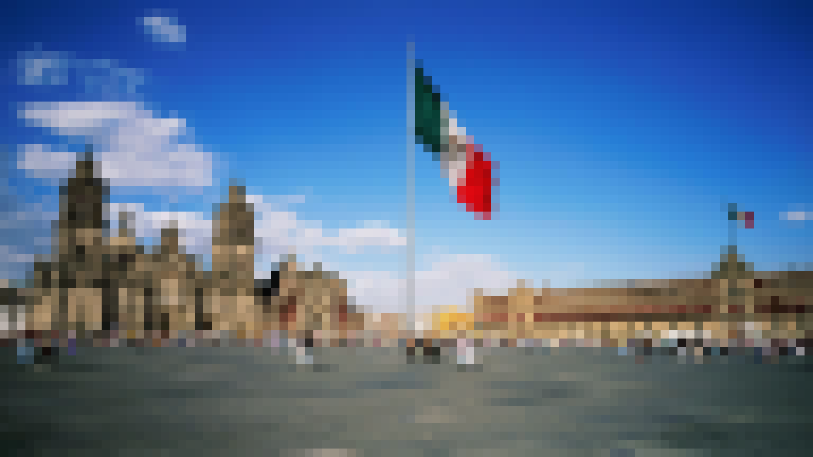
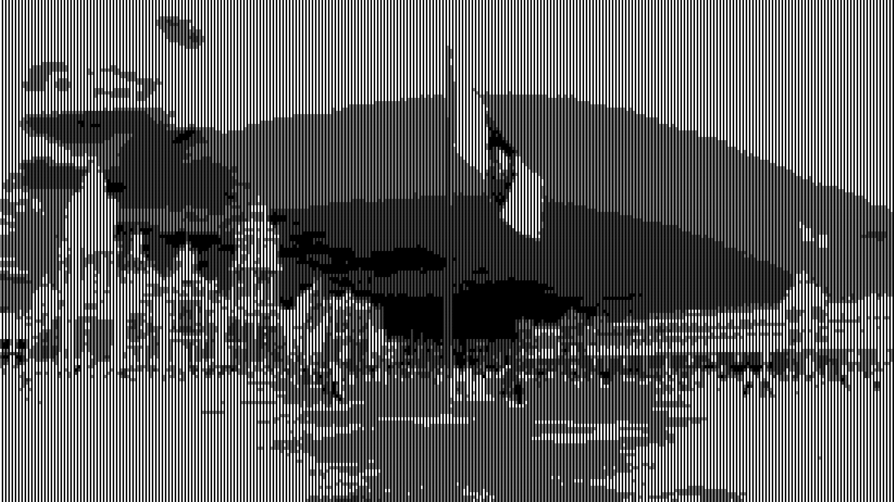

Dette prosjektet er en liten samling av Python-eksperimenter rundt bildebehandling. Fokus er på å forstå hvordan filtre fungerer, hvordan piksler blir transformert, og hvordan visuelle effekter kan opprettes med kode.
Jeg har brukt prosjektet til å teste både den mest direkte, “for hver piksel”-tilnærmingen og mer kraftfulle NumPy-løsninger, slik at man kan se både den konseptuelle logikken og hvorfor vektorisering gir en stor forskjell i ytelse.
Filter-demoer for bildeeffekter
Gråskala, sepia, blur, pixelering og ASCII-rendering i én liten visuell showcase.
Python + NumPy pipeline
Bildet leses inn, transformeres i filterfunksjoner og eksporteres som sammenlignbare resultater.
Python vs. NumPy
Samme effekt kan løses med løkker eller vektorisert kode, og ytelsesforskellen er stor.
Visualisering av konseptet
Originalen blir tydelig forskjellig fra de bearbeidede variantene, som gjør filtereffekten lett å forstå.
Prosjektnotater
- Filterarbeidet ligger i samme pipeline og er lett å gjenbruke.
- Eksperimentene inkluderer gråskala, sepia, pikselering, blur og ASCII-rendering.
- Det mest interessante felet er ikke “hva som ser bra ut”, men “hvor raskt og elegant koden faktisk gjør beregningen.”

Original

Greyscale

Sepia

Pixelator

ASCII
Blur
Interessante kodesnutter
Her er noen av de mest illustrative filter-implementasjonene fra prosjektet. De viser hvordan piksler transformeres, hvordan lokale områder behandles, og hvordan visuelle effekter oppnås med ganske liten kode.
1. Gråskala: vekting av RGB-kanaler
Dette er et klassisk eksempel på en enkel men viktig transformasjon. Hver kanal får en egen vekt, og resultatet blir et bilde som fanger lysstyrke i stedet for farge.
def numpy_greyscale(image: np.ndarray) -> np.ndarray:
red = image[..., 0] * 0.21
green = image[..., 1] * 0.72
blue = image[..., 2] * 0.07
gray_image = red + green + blue
gray_image = np.stack([gray_image] * 3, axis=-1)
return gray_image.astype(np.uint8)2. Sepia: lineær fargekombinasjon
Sepia vises som en liten color-matrix-operasjon: hver pixel multipliseres med en fargetransform og blir dermed varmere og mer “filmisk”.
def numpy_sepia(image: np.ndarray, k: float = 1.0) -> np.ndarray:
sepia_matrix = np.array([
[0.393, 0.769, 0.189],
[0.349, 0.686, 0.168],
[0.272, 0.534, 0.131],
])
sepia_image = image @ sepia_matrix.T
sepia_image = (sepia_image * k) + image * (1 - k)
sepia_image = sepia_image.clip(0, 255)
return sepia_image.astype(np.uint8)3. Blur: gaussisk kernel over nabopiksler
Dette er hvor det blir ekstra interessant. En gaussisk blur bruker en liten lokal kernel som “veier” nabopiksler, og det er et klassisk eksempel på en operation som er både visuell og beregningsmessig tung.
def gaussian_kernel(kernel_size, sigma=1.0) -> np.ndarray:
radius = kernel_size // 2
kernel = np.zeros((kernel_size, kernel_size))
for y in range(-radius, radius + 1):
for x in range(-radius, radius + 1):
exponent = -(x**2 + y**2) / (2 * sigma**2)
kernel[y + radius, x + radius] = np.exp(exponent)
kernel /= kernel.sum()
return kernelPython vs. NumPy: hvorfor dette faktisk betyr noe
Den mest interessante delen av prosjektet er ikke filteret i seg selv, men hvordan det kan implementeres på to nivåer. En ren Python-løsning itererer over hvert piksel og hver nabo i en løkke, mens NumPy bruker vektorisering og opererer på hele arrays på én gang. Det gir samme visuelle resultat, men med en stor forskjell i hastighet og kodekompleksitet.